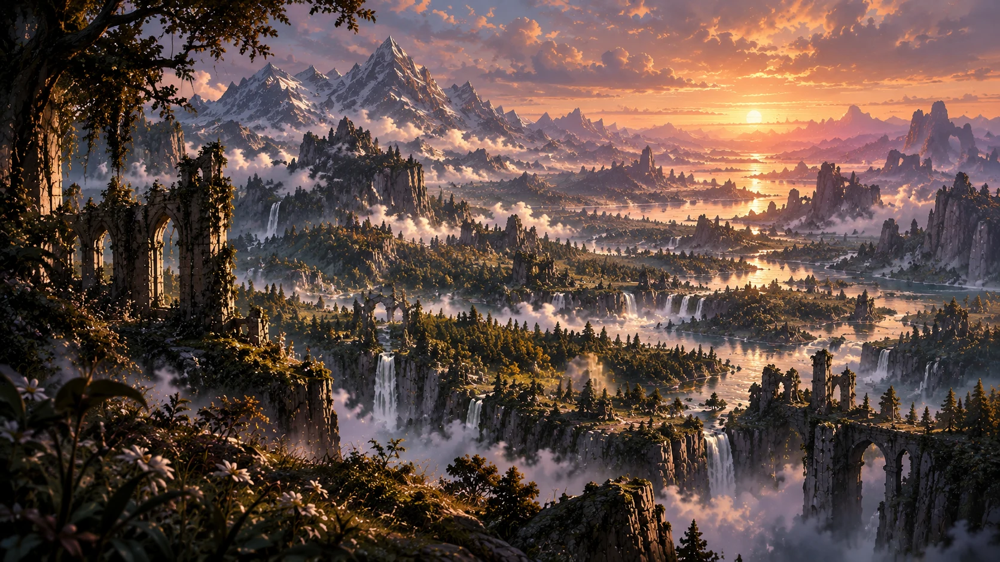
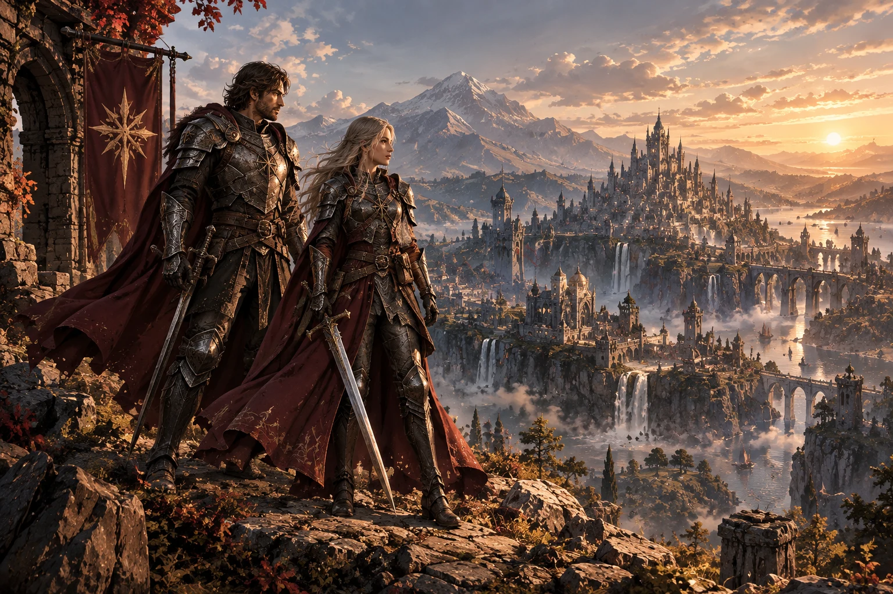
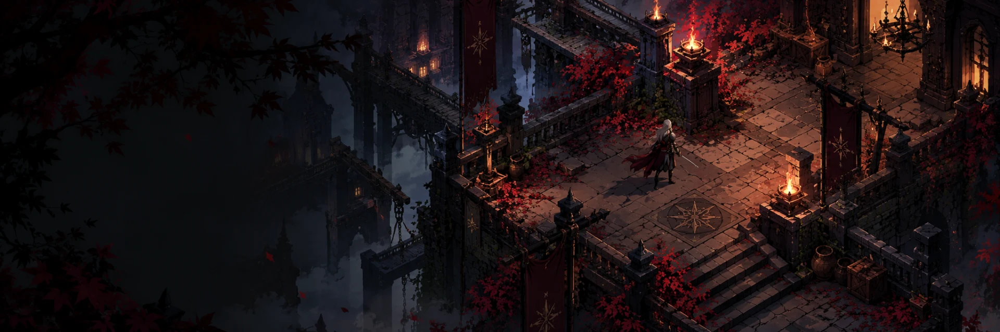
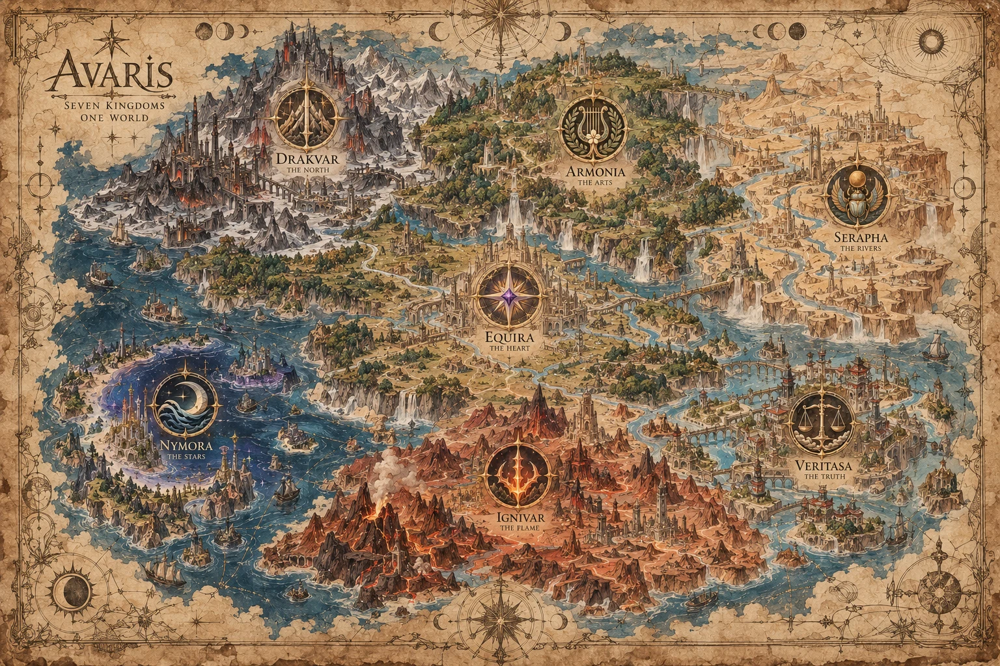
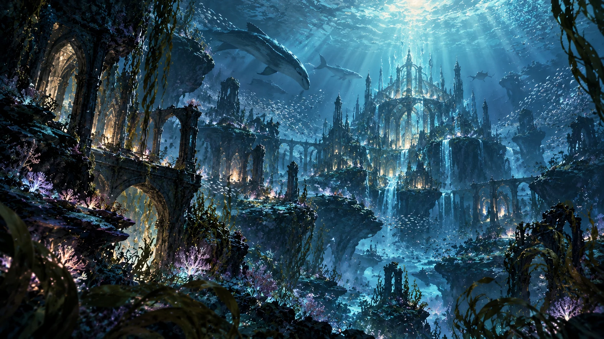
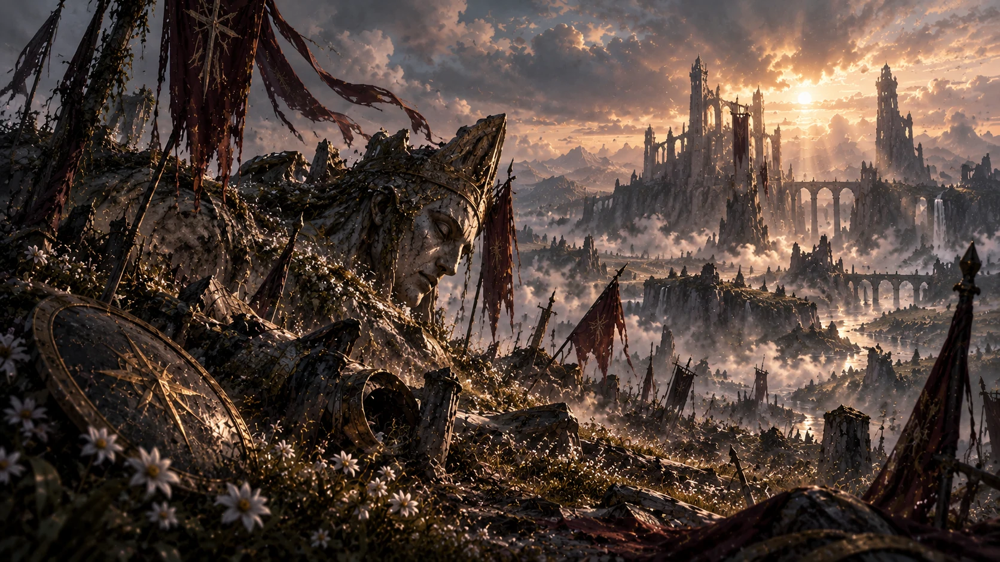
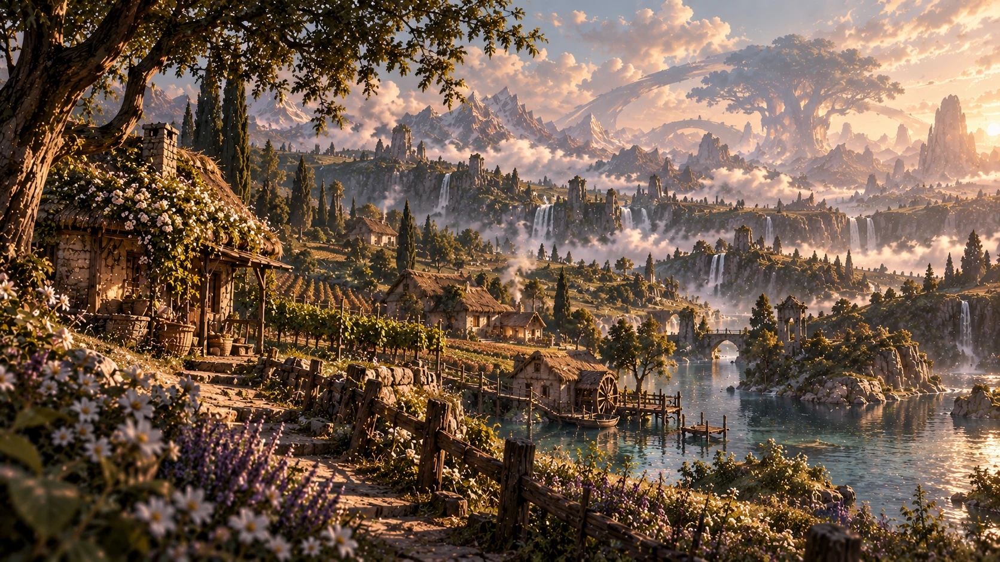
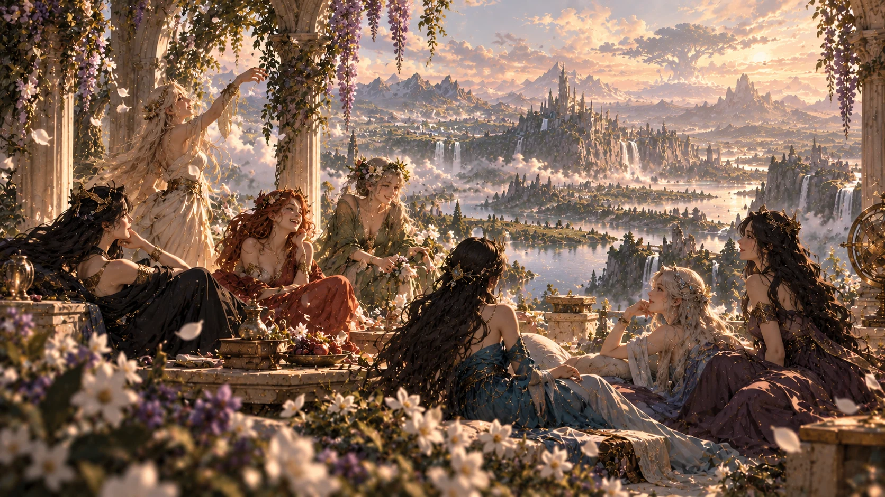
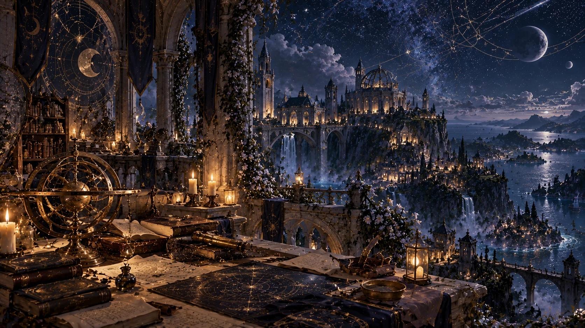
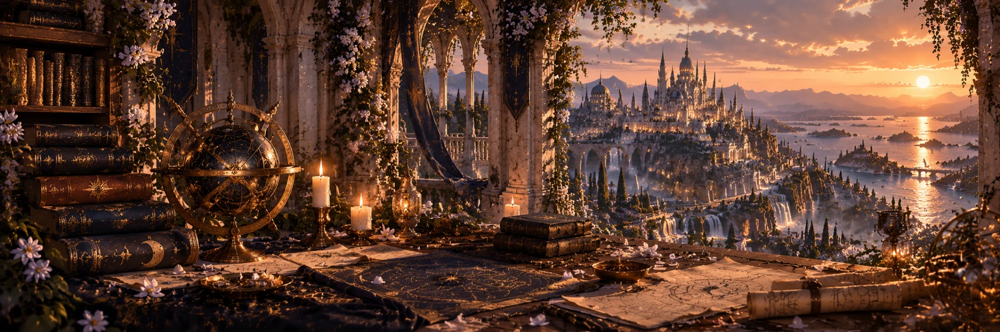

Beyond the kingdoms
Beyond the Borders
Beyond the borders of the seven kingdoms lie remote wilderness and forgotten places.

THE GAME
Explore a hand-crafted world, uncover forgotten truths, and shape your own journey across the seven kingdoms of Avaris.
LEARN MORE ↗
THE WORLD
Seven kingdoms share one world, but no two remember its history in quite the same way.
EXPLORE THE WORLD ↗

Beyond the kingdoms
Beyond the borders of the seven kingdoms lie remote wilderness and forgotten places.

Ocean
Deep beneath Avaris’s oceans, an aquatic people live freely, without a monarch or ruler.

History
A war hero from Avaris’s past, and the memory an old conflict left behind.

First ages
In the first ages of Avaris, a villager leads an ordinary, peaceful life.

Memory
A memory of the seven sisters together and happy, before destruction and division.

Nymora · Academy
A gifted student learns to read the stars at Nymora’s academy, preparing to become a seer.
